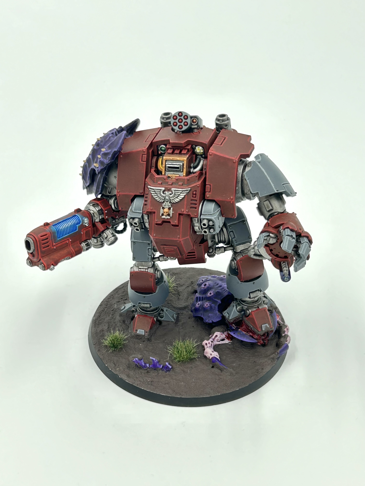
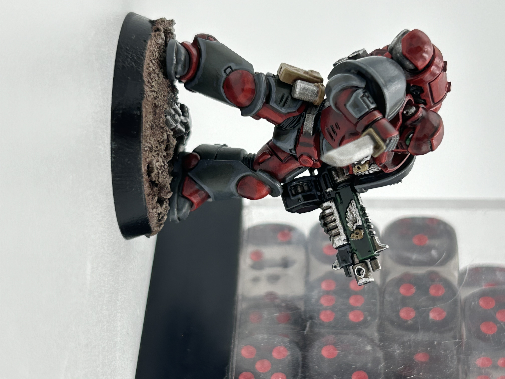

Community Involvement
In my time at Cal Poly Humboldt, I sought out community building opportunities.As president of both the Aviation Club and ASME chapter, I led community focused outreach and organization while helping build a community of student leaders. In these roles, I helped oversee the installation of an Advanced Aviation Training Device (AATD), giving students and community members the opportunity to log hours in both their IFR and VFR flight times.
Through the Aviation Club, we also organized workshops for students preparing to earn their FAA Part 107 Remote Pilot Certificate. Participating in these events further developed my interest in aviation, and my future goals include earning both my Part 107 certification and my private pilot's license.
Hobbies
Outside of engineering, I enjoy finding creative and challenging hobbies. I studied violin for 14 years before transitioning to the guitar, which I have played for over a decade now. I have also been playing boardgames since I was very young. For over 20 years I have been playing Dungeons & Dragons, becoming a "forever dungeon master" as its known in the ttrpg world. I have run games for groups as small as three to as large as eight people
Outside of Dungeons & Dragons, I have also been able to channel my love for art and gaming through playing warhammer 40k. I began the hobby with an interest in learning how to mini paint. While developing my skills, I have documented my progress via my instagram. I have included some of my favorite pieces below.

Redemptor Dreadnought
This is the Redemptor Dreadnought and on of my best peices. I finished this project over the course of three days including the base and main model. What I am proud of most is the addition of the carapace shoulder pauldron which is not included in the main kit.

Space Marine
This model is apart of the first collection of minis that I painted after really developing my painting style. It was also my first attempt at a lens glare as seen in the eyepeice of the mini. Mini dice for scale.